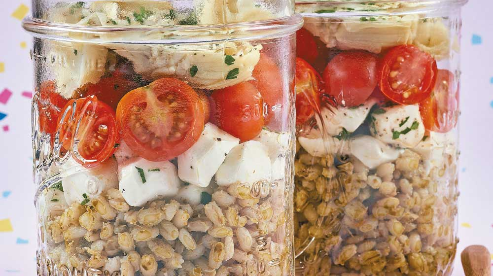

ENSALADAS
Ensalada Cebada

Espectativa
Ingredientes:
- Un puño de arúgula
- 6 jitomates cherry
- Medio mango
- 6 trozos de brócoli
- 1/2 taza de quinoa cocida
Pasos:
- Corta el mango y las verduras en cubos
- Sirve al fondo del Mason jar tu aderezo favorito
- Después la quinoa, y sigue con el resto de los ingredientes
- Tapa y refrigera


Este es un sitio de recetas rápidas que puedes hacer facilmente para una reunión, sorpresa, algo casual o simplemente para ti.